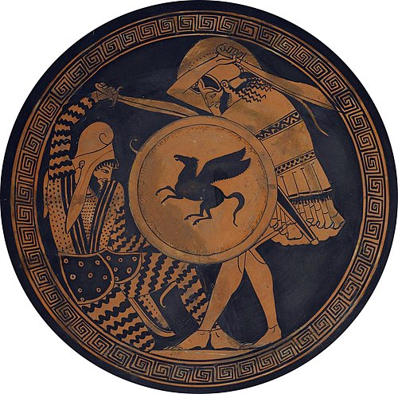

Greece
Eras of Ancient Greece
- Aegean Civilization
- -Aegean civilization is a general term for the Bronze Age civilizations of Greece around the Aegean Sea. There are three distinct but communicating and interacting geographic regions covered by this term: Crete, the Cyclades and the Greek mainland. Crete is associated with the Minoan civilization from the Early Bronze Age. The Cycladic civilization converges with the mainland during the Early Helladic ("Minyan") period and with Crete in the Middle Minoan period. From c.1450 BC (Late Helladic, Late Minoan), the Greek Mycenaean civilization spreads to Crete, probably by military conquest. The earlier Aegean farming populations of Neolithic Greece brought agriculture westward into Europe before 5,000 BC.
- Archaic Period
- -Archaic period, in history and archaeology, the earliest phases of a culture; the term is most frequently used by art historians to denote the period of artistic development in Greece from about 650 to 480 BC, the date of the Persian sack of Athens. During the Archaic period, Greek art became less rigidly stylized and more naturalistic. Paintings on vases evolved from geometric designs to representations of human figures, often illustrating epic tales. In sculpture, faces were animated with the characteristic “Archaic smile,” and bodies were rendered with a growing attention to human proportion and anatomy. The development of the Doric and Ionic orders of architecture in the Archaic period also reflected a growing concern with harmonious architectural proportions.
- Classical Antiquity
- -Classical antiquity, also known as the classical era, classical period, classical age, or simply antiquity, is the period of cultural European history between the 8th century BC and the 5th century AD comprising the interwoven civilizations of ancient Greece and ancient Rome known together as the Greco-Roman world, centered on the Mediterranean Basin. It is the period during which ancient Greece and ancient Rome flourished and had major influence throughout much of Europe, North Africa, and West Asia. Conventionally, it is often considered to begin with the earliest-recorded Epic Greek poetry of Homer (8th–7th-century BC) and ends with the end of the Western Roman Empire in 476 AD. Such a wide span of history and territory covers many disparate cultures and periods. Classical antiquity may also refer to an idealized vision among later people of what was, in Edgar Allan Poe's words, "the glory that was Greece, and the grandeur that was Rome".
- Greco-Persian Wars
- - The Greco-Persian Wars (also often called the Persian Wars) were a series of conflicts between the Achaemenid Empire and Greek city-states that started in 499 BC and lasted until 449 BC. The collision between the fractious political world of the Greeks and the enormous empire of the Persians began when Cyrus the Great conquered the Greek-inhabited region of Ionia in 547 BC. Struggling to control the independent-minded cities of Ionia, the Persians appointed tyrants to rule each of them. This would prove to be the source of much trouble for the Greeks and Persians alike. In 499 BC, the tyrant of Miletus, Aristagoras, embarked on an expedition to conquer the island of Naxos, with Persian support; however, the expedition was a debacle and, preempting his dismissal, Aristagoras incited all of Hellenic Asia Minor into rebellion against the Persians. This was the beginning of the Ionian Revolt, which would last until 493 BC, progressively drawing more regions of Asia Minor into the conflict. Aristagoras secured military support from Athens and Eretria, and in 498 BC these forces helped to capture and burn the Persian regional capital of Sardis. The Persian king Darius the Great vowed to have revenge on Athens and Eretria for this act. The revolt continued, with the two sides effectively stalemated throughout 497–495 BC. In 494 BC, the Persians regrouped and attacked the epicenter of the revolt in Miletus. At the Battle of Lade, the Ionians suffered a decisive defeat, and the rebellion collapsed, with the final embers being stamped out the following year.
